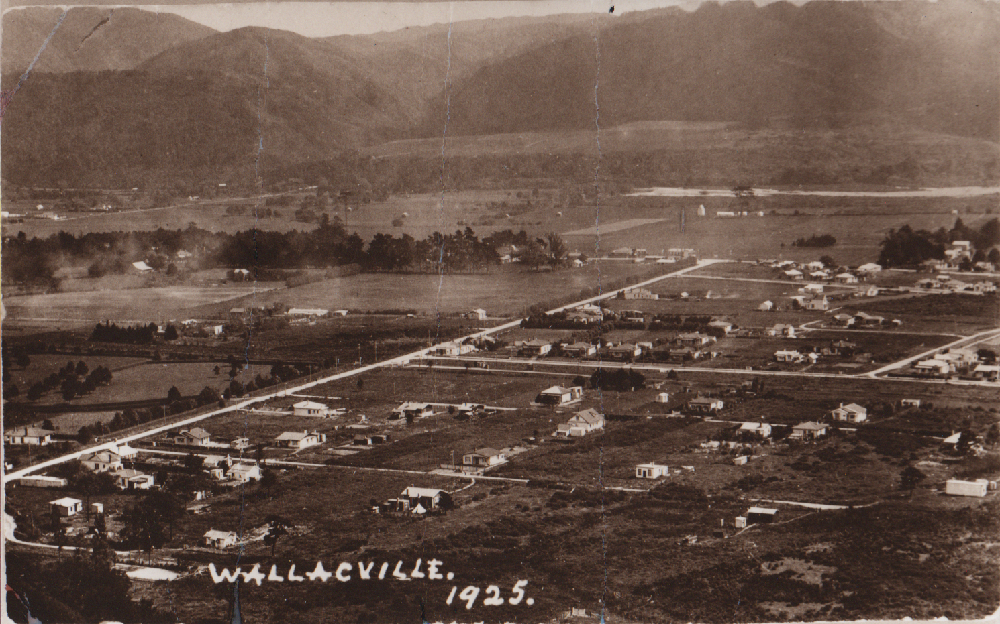
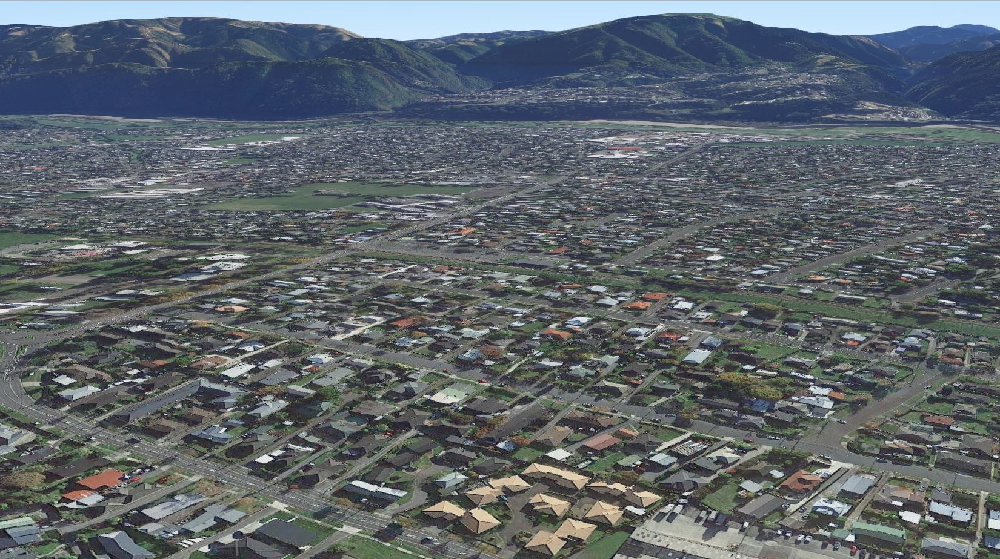
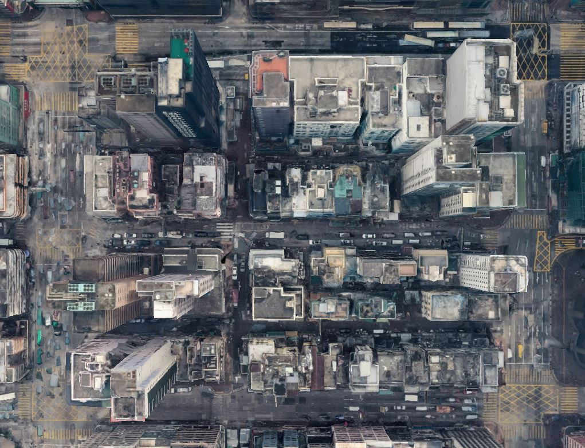
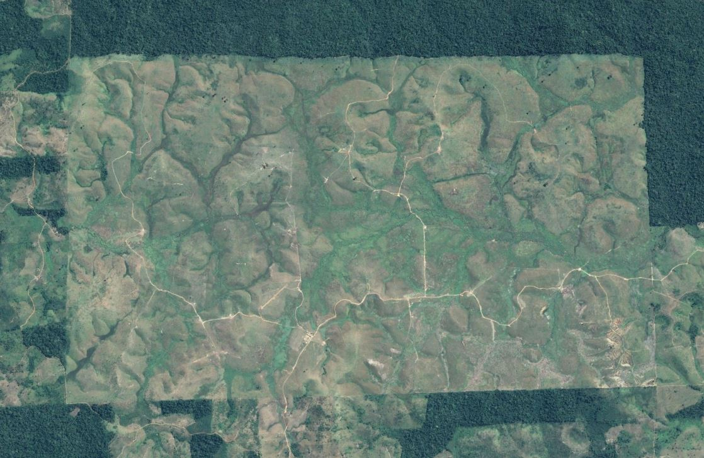
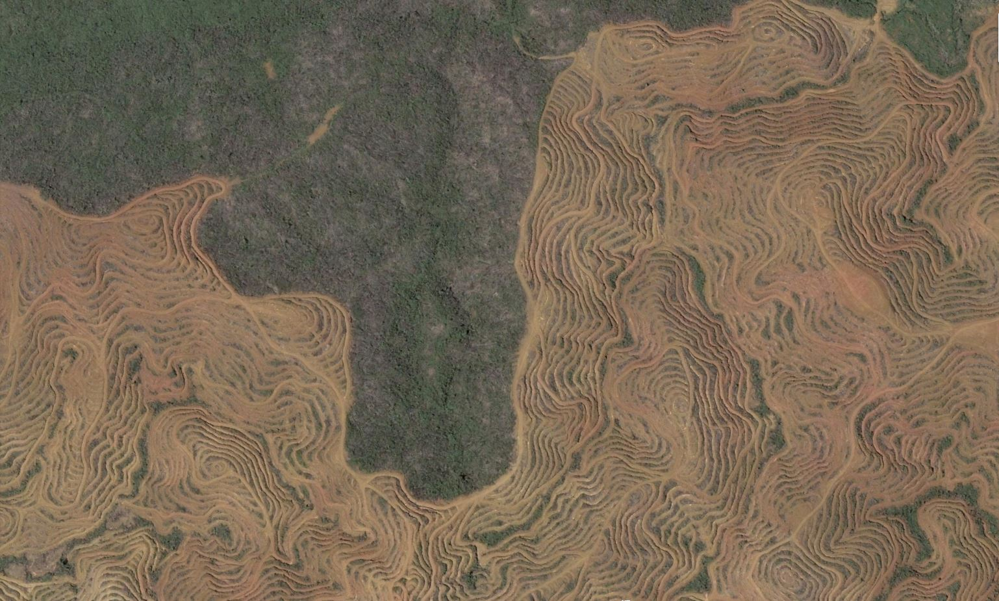

Memoir of a House:
in the changing world
Past
I was assembled slowly and carefully, with artisanship and pride from the abundant native Totara, Matai and Rimu trees of New Zealand. I was built from the ground up, following traditional British building methods brought with the settlers establishing life in New Zealand. Timber into soil and planks supporting each other to frame my small cottage body. Other houses around me were all built the same way and out of the same materials, but we are all unique, special to our inhabitants. I was covered in cladding to keep the outside from getting in and to keep my family safe, warm, and healthy.
I am a remnant of the original European cottages that provide only what you need, a safe comforting space that functions well, perfect for the basics of living. These settlers are putting down their roots, making a small slice of the land their own and an individualized place to exist from.
I burn coal and wood in a coal range to keep my family warm, heat their water and cook their food. This is my most important space, my heart, where the family gathers to be together, the space in which quality meaningful social interactions are facilitated and guests can experience commensality and comradery.
Figure 1. Willcox, S. (2018). Coal Range [Photo].
I grew with my family, I changed and evolved with them. I became more than just a utility and developed into an extension of their being. I reflected their values and their way of life. Due to my small size, the way my family uses my space shows what is prioritized and therefore what is valued. For example, they value time as a family and commensality therefore their table is large, filling the space, displaying its importance in the house and their lives. The newly developed community requires its people to live off the land to maintain their sustainable way of life so hard work is expected but also respected. Displaying efforts of a successful lifestyle inside of me in these new conditions establishes my families value in the community. Everyone living here started with the same social status but as time goes on, the residents judge each other’s success based on how they present themselves and their house.
Figure 2. Unknown. (1925). Wallaceville 1925 [Scanned Image]. Upper Hutt Library Public Collection.
I meet all the needs of my family, but as they are expanding, I am shrinking, and creating more problems than I solve, so they need to move on. It is not easy for them to leave me because I symbolize the beginning of their lives together in an unknown country. I am a familiar feeling and a comfort of home. I also allow a way for them to connect to the land and culture, making their transition into New Zealand possible.
Present
Houses like me became common and then outdated as an increase of people heard word of the rich culture and lifestyle of living in New Zealand. The land is now inundated with houses. Farms became property spaces and properties became subdivisions. The appeal of New Zealand life was its own undoing as the land was overtaken with residents, the old way of life was lost, and a new culture was born.
Figure 3. Willcox, S. (2018). Satellite Image of Wallaceville [Screenshot]. Google Earth.
I now house a family with children to protect, so my job is more important to these parents than ever before. The kids spend all their time in their room, they crave their own space and environment to control away from the structure of the home. I saw their first steps, their first words and even their birth and now all they do is put pins in me and cover my walls in decorations, but this makes each room personal, unique, and special, an expression of personality. I am familiar and comfortable to them, a constant reminder of childhood.
The values and culture attached to the old style of my structure has translated onto my family's simple, older fashioned way of practical living. My colour and contents are constantly updated to stay personal to the family, but my original style is still intact, and I am only ever modified to keep the family healthy, never to stay modern or popular. Other modern houses may be valued more in the market, but I do my job with what I have. I have the essential spaces needed for a family, nothing in excess and my family values the cozy spaces that I do provide. I change for my family, I moved my walls to give them space to spend important time together when the kids were young and when everywhere inside me was a valued communal space.
My family creates my value, without them I would be only a structure. I mean different things to the various people that have lived in me, but I am only valuable to them. To others, I am just a space, I am real estate. To them, my value lies in my utility and materials. People also use me to judge the social status on my family. My materials, style, and presentation all contribute to the social value created by the community.
Figure 4. Willcox, C. (1996). Dining Room Renovations [Scanned Image].
My family takes care of me, because I take care of them. I am made to last, or at least to be easily adapted when necessary. When I break, they can fix me, when I get borer and mold, they replace my pieces because I can’t keep them healthy if I am sick too. Although I am taken care of, I am worn down from use over the years. My crumbling floors are replaced with concrete instead of the original timber as the native trees are now conserved and protected as a part of New Zealand's identity.
Figure 5. Willcox, C. (1996). House Renovations [Scanned Image]
For quite some time now I have been using electricity as well as wood and coal. I can do all the same things, but electricity is instant and the value of the process and effort in sourcing and preparing fuels is disregarded. This disconnects my family from the effects that using this energy has on the environment, as it has with all modern households. The outdated methods of creating heat has instilled simple, practical living values into the children including using and respecting the resources that nature provides. Unfortunately, this came paired with an ignorance of the long-term effects the earth has recently learnt pollution causes.
Future
Figure 6. Willcox, S. (2018). Satellite Image of Hong Honk [Screenshot]. Google Earth.
As space on the earth has become minimal with the drastic increase of humans and housing required for them, people have built vertically. I don't see the sun anymore surrounded by towering synthetic apartment buildings. I am not a common or current feature of the earth, instead, a cause for nostalgia of how life used to be for those still around to remember. I represent the feeling of home for everyone who has abandoned theirs for cookie cutter matchbox apartments. Every part of me links to a memory from the life my family spent together, but now that they are gone, I have lost all value as a whole. My walls were scuffed, my floor was scratched, and my roof was leaking but I was a home. I still hold an impression of everyone who has lived in me, but it is meaningless to the rest of the world.

Figure 7. Willcox, S. (2018). Chews Lane [Photo].

Figure 8. Willcox, S. (2018). Manning Lane [Photo].
My preservation as a house was abandoned when wood became scarce. Trees can no longer grow in the earth's current condition. Any that were standing have either died or been cleared during the mass deforestation to accommodate for the explosion of apartment buildings.
Figure 9. Willcox, S. (2018). Amazon Forest Deforestation [Screenshot]. Google Earth.
Figure 10. Willcox, S. (2018). Deforestation in Malaysia [Screenshot]. Google Earth.
Native timber is especially rare as it is the only thing left that can connect the people with the New Zealand land and dying culture. When humans realised that culture was worth saving, native trees value skyrocketed but it was too late to save them.
Figure 11. GBCWinstone. (n.d.) Aerial shot of BGCWinstone Quarry [Photo].

Figure 12. Willcox, S. (2018). Wellington Quarry [Photo].
My style was classic, but it is seen as an outdated visual inconvenience for the industrial, impersonal clones erected around me. I have been ripped apart, my value is only determined by my materials, what can be used, what can be sold and what is useless. Whatever remains has been left for dead, my natural decay can’t nourish the ecosystem because people destroyed that long ago. I will just turn to dust, worthless to the planet. The supposed advancement and evolution of humankind has resulted in the devolution of the planet and humans' relationship to it. Humans were once one with the earth, they were connected to the land that they called home, but they have destroyed it to the point where there is no nature, no biodiversity. They are all that is left.
My coal range is useless and despised, now it represents the time when humans killed their own environment. Burning fossil fuels for heat is an archaic practise that humans now realise contributed to them single handedly collapsing an ecosystem. There’s nothing left to burn now and there’s nothing left worth saving.
References
Adger, W.N., Barnett, J., Brown, K., Marshall, N. & O’Brien, K. (2013). Cultural dimensions of climate change impacts and adaptation. Nature Climate Change, 3(2), 112-117. doi:10.1038/nclimate1666
Boradkar, P. (2010). Designing things; a critical introduction to the culture or objects, English ed. Retrieved from https://content.talisaspire.com/victoria/bundles/5a9b262b540a264bab3cb574?userId=rh1cxwEdon%2FbzViuARq7lowdV6g%3D&key=715c42868985698233686ec57c6cf55fc37e18ffe85e4c11ac4d7128cf63a3dd#
GBCWinstone. (n.d.) Aerial shot of BGCWinstone Quarry [Photo]. (Gained permission from the company to use the photo.)
Unknown. (1925). Wallaceville 1925 [Scanned Image]. Upper Hutt Library Public Collection.
Vannini, P. (2009). Material culture and technology in everyday life: ethnographic approaches. Retrieved from https://content.talisaspire.com/victoria/bundles/5a9b2595540a264a7461d924?userId=rh1cxwEdon%2FbzViuARq7lowdV6g%3D&key=4b4efd101c866fa29914902a2ee64e6de3ac89f2265d096bf64e091b0f74c0cb#
Walker, S., Cassidy, T., Evans, M., Holroyd, A. T., & Jung, J. (Eds.). (2018). Design roots : local products and practices in a globalized world. Retrieved from https://ebookcentral.proquest.com
Willcox, C. (1996). Dining Room Renovations [Scanned Image].
Willcox, C. (1996). House Renovations [Scanned Image].
Willcox, S. (2018). Amazon Forest Deforestation [Screenshot]. Google Earth.
Willcox, S. (2018). Chews Lane [Photo].
Willcox, S. (2018). Coal Range [Photo].
Willcox, S. (2018). Deforestation in Malaysia [Screenshot]. Google Earth.
Willcox, S. (2018). Manning Lane [Photo].
Willcox, S. (2018). Satellite Image of Wallaceville [Screenshot]. Google Earth.
Willcox, S. (2018). Satellite Image of Hong Honk [Screenshot]. Google Earth.
Willcox, S. (2018). Wellington Quarry [Photo].